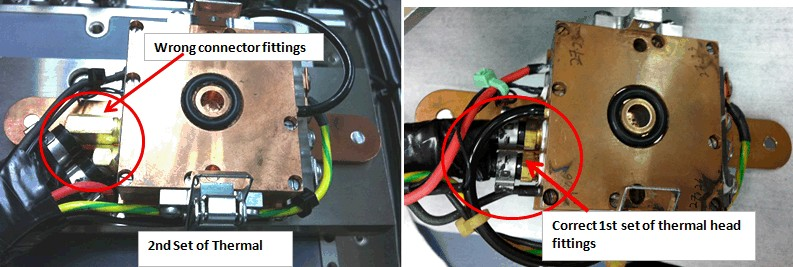
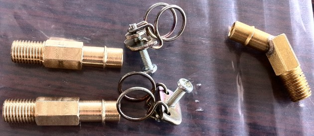

Service History
Subject: NS-8040 wrong ATC fitting
Handler Model: NS-8040 (S/N:181840, NS80-37 ATC)
Controller: RC520 (S/N: 03-10112)
Date: 3 Aug 2011
Symptom
Wrong ATC fitting elbow(45 degree) fitting for thermal head.

Straight fitting is correct.
Action
Custom made straight fitting by hardware shop.

ATC installation for NS-8040
1 Aug 2011
-Remove socket Dock Plate Heater assembly(for KA to modify)-Place LB960-i temperature controllers(Head#1 & #5) and Power Supply PS960-24 above NS-8040-Connect power supply connection (with circuit breaker) to Power Supply PS960-24-Connect 24Vdc power connector from Power Supply PS960-24 to LB960-i temperature controllers-Install Head#5 to Index Arm2 Head 5/6Need to wait for modified socket Dock Plate Heater assembly and Input Shuttle cover and change kit for cable house keeping and to determine pickup and release height-DIO2 wiring for Temperature Ready and P6(24Vdc) & N1(RGND) done in office-Connect DIO2 connector to Drive Unit 2-Connect P6(24Vdc) and N1(RGND) to PSUNT from DIO2 connector-Connect Temperature Ready Cable from DIO2 connector to ATC temperature controllers-As IFUNT200 card is used, set JP1 & JP2 short on Contec COM-4(LPCI)H card, card ID on rotator switch ensure set to 0-Insert Contec COM-4(LPCI)H card to “PCI 1” slot in RC520-Power up NS-8040 and install driver for Contec COM-4(LPCI)H card
2 Aug 2011
-Install HMI X10.10-SUS(select Silicon Thermal, uncheck Socket Heater)
-In HMI select Active Cooling for Single Head
-Relocate water manifold into handler(above empty tray buffer) due to ATC Head #5 cable & Return & Supply water hose too short
-Connect PCE44/9P4S RS232 cable(1 port split to 4 serial port) to Contec COM-4(LPCI)H card
-Connect LB960-i temperature controller's RS232 #1 to RS232 #1 of Contec COM-4(LPCI)H card
-Connect LB960-i temperature controller's RS232 #5 to RS232 #3 of Contec COM-4(LPCI)H card (later encountered error)
-Connect Return & Supply water hose to Slicon Thermal Chiller CH1250
-Connect 230Vac cable & power up Silicon Thermal Chiller CH1250
-Power up LB960-i temperature controllers
-HOME handler, encountered "Active cooling echo back error", reconnect LB960-i temperature controller's RS232 #5 to RS232 #2 of Contec COM-4(LPCI)H card , ok
-HOME handler, encountered "Active cooling temperature error CH1".
-Check SPEL I/O, found Temperature Ready Input Bit 24(ATC_COL1; for Head #1) was OFF and Input Bit 25(ATC_COL2; for Head #5) was ON.
ATC Input bit for Temperature Ready should be ON to indicate temperature controller is ok.
-Short Temperature Ready Cable(Red & Grey) for #1 at DIO2, Input Bit 24(ATC_COL1; for Head #1) turn ON, able to HOME handler.
-In HMI, switch to high temperature at 50DegC, temperature controller able to control ATC head #5 to hot temperature
-50x50 BGA C/K ( U-NS6040-867/C) (reversed eng'r) by KA , found shuttle jigs too long and hotplate physical matrix incorrect.
Actually Hotplate jig physically is too long which extend out of Hotplate 2 in the Y direction.
3 Aug 2011
-Install socket Dock Plate Heater assembly(modified by KA) & socket heater with heaters' connector
-Install Socket Guide jig
-Install modified cover for Input Shuttle's 2 heater connector
-Install modified(cut short) Input Shuttle 2 jigs
-Temperature printout for ATC Head at 25DegC(6 printout with 5 mins interval printing)
-Temperature before calibration printout for ATC Head at 110 DegC(6 printout with 5 mins interval printing)
-Change temperature controller temperature offset to -1.5DegC, Temperature printout for ATC Head at 110 DegC(6 printout with 5 mins interval printing)
-House keeping on ATC Head at Index Arm 2 Head 5/6 on socket & Input Shuttle 2 but found water Return & Supply brass fitting were actually 45Deg, in this case tubings & cables rub on the Index Area